Authors: Hidir Yesiltepe, Julius Berner, Arash Vahdat, Pinar Yanardag · Adobe, ETH, NVIDIA
Published: 2026-11-19 · Category: cs.CV
Citation: arXiv:2611.26629v1 · PDF · abstract page
Posterior Matching Distillation: Reducing 4-Step Generation FID by 12.8% over SOTA
1. What It Is & Why It Matters
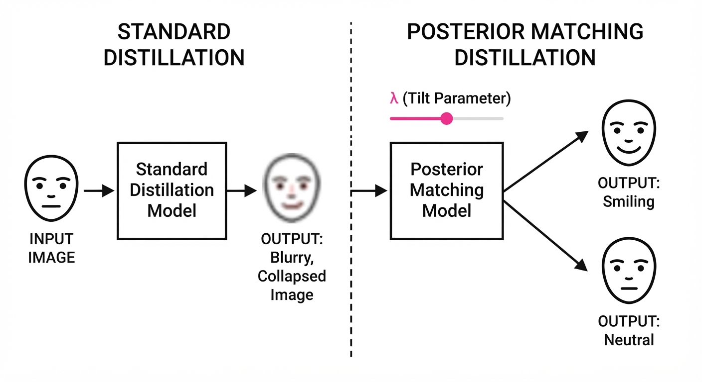
Diffusion models are computationally expensive because they require dozens of sequential denoising steps. Existing distillation methods—which train a "student" to mimic a "teacher"—often suffer from mode-seeking bias. When forced to match a distribution, they collapse onto the most "average" looking output, sacrificing the rich diversity and fine-grained detail of the original teacher model.
Posterior Matching Distillation (PMD) solves this by shifting the objective from matching a single point to matching the entire posterior distribution. By leveraging a mathematical property called exponential tilting, PMD forces the student to learn the full range of possible denoised images at any given noise level.
- The Problem: Traditional distillation uses reverse-KL objectives that ignore the "long tail" of the distribution, leading to blurry or repetitive images.
- The Core Idea: Instead of matching a single mean, PMD matches a family of "tilted" posterior means, which uniquely identifies the entire conditional distribution.
- Headline Result: On the FLUX.2 (4B) model, PMD achieves a 4-step FID of 1.95, outperforming the previous state-of-the-art (SOTA) of 2.23.
🏭 Industry Angle: Generative AI infrastructure teams can now slash inference costs by ~80% (e.g., moving from 20 steps to 4) without the "mode collapse" that usually plagues high-speed diffusion models, making real-time image generation viable for high-fidelity creative tools.
2. How It Works
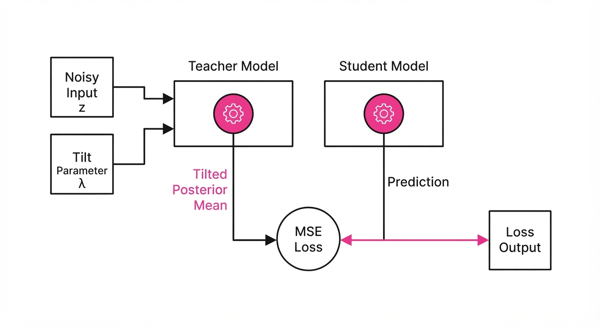
PMD treats the student as a stochastic sampler that recovers the teacher’s posterior at any timestep.
- Exponential Tilting: It uses a weighting function to focus on different regions of the teacher's posterior, effectively "probing" the distribution from multiple angles.
- Mean Matching: The student is trained to match the tilted posterior mean of the teacher, which is mathematically equivalent to a single teacher evaluation at a shifted input.
- No Auxiliary Networks: Unlike methods like Consistency Models, PMD does not require a separate score-matching network, simplifying the training pipeline.
- Any-Step Flexibility: Because the student learns the posterior at each noise level, it can be sampled at any number of steps within the trained grid without retraining.
- Mathematical Uniqueness: PMD proves that matching these tilted means over an open neighborhood is sufficient to reconstruct the full target posterior.
# Conceptual logic for PMD training
def pmd_loss(student, teacher, noisy_z, t, tilt_param):
# Shift the input based on the tilt parameter
shifted_z = z_shift(noisy_z, tilt_param)
# Target: The teacher's mean at the shifted input
target_mean = teacher.posterior_mean(shifted_z, t)
# Student prediction
pred = student(noisy_z, t, tilt_param)
return mse(pred, target_mean)3. Core Idea & Key Numbers
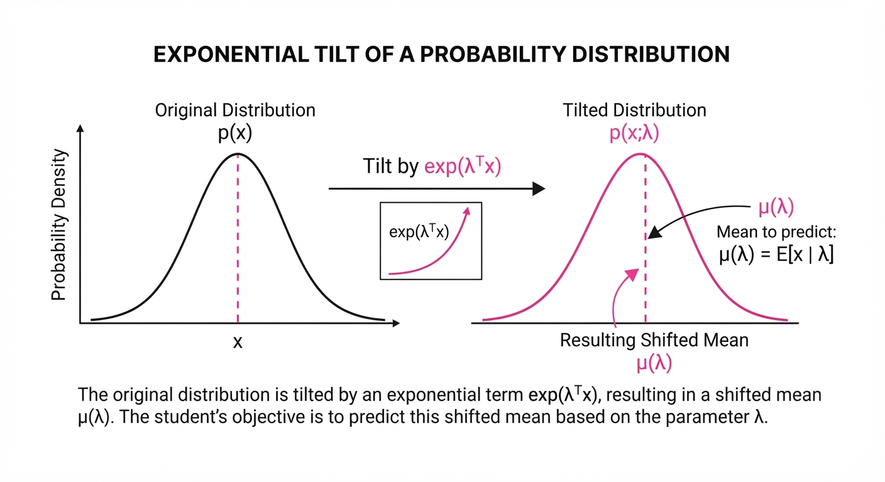
The mechanism relies on matching the exponentially tilted posterior mean, defined as: μ(z, t; λ) = ∫ x · p(x | z, t) · exp(λᵀx) dx / Z(λ)
💡 Intuition: Imagine you are trying to guess the location of a hidden object. Instead of just guessing the "average" location (which might be in the middle of a wall), you ask, "Where is the object if I assume it is slightly to the left?" and "Where is it if I assume it is slightly to the right?" By asking enough of these tilted questions, you can perfectly map the shape of the object. 🔍 Example: If the teacher's posterior is a mixture of two faces (smiling vs. neutral), a standard student might output a ghostly blur of both. PMD forces the student to learn the "smiling" mean when λ is positive and the "neutral" mean when λ is negative, capturing both modes clearly.
4. Analogy
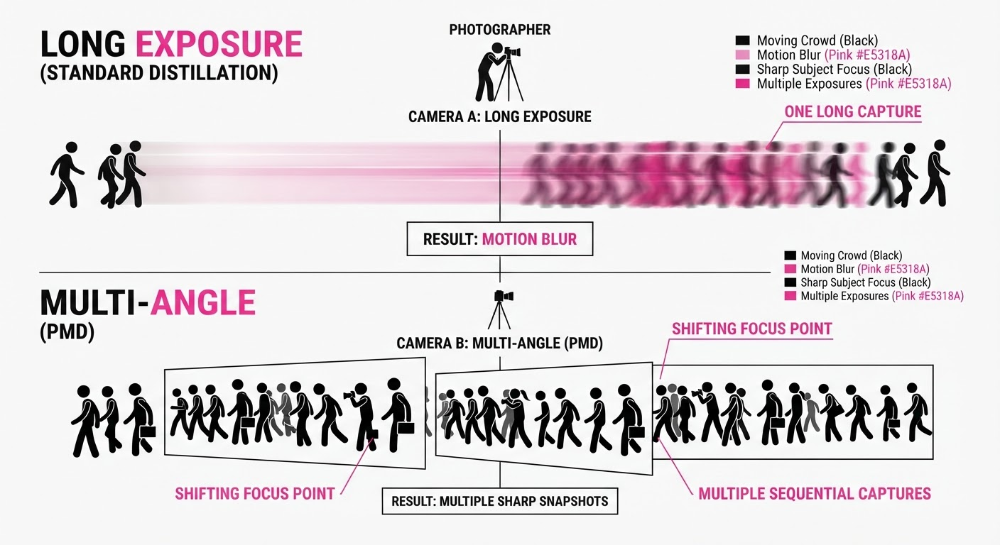
Think of a photographer trying to capture a moving crowd. A standard "mode-seeking" camera would just take a long-exposure shot, resulting in a blurry smear where everyone is translucent.
PMD is like a high-speed burst mode that learns exactly where each person is standing at different intervals. By matching these "tilted" snapshots, the student learns not just the blur, but the individual identities within the crowd, allowing it to render a crisp, diverse image even when it only has a fraction of a second to "see" the scene.
5. Results & Measurable Improvement
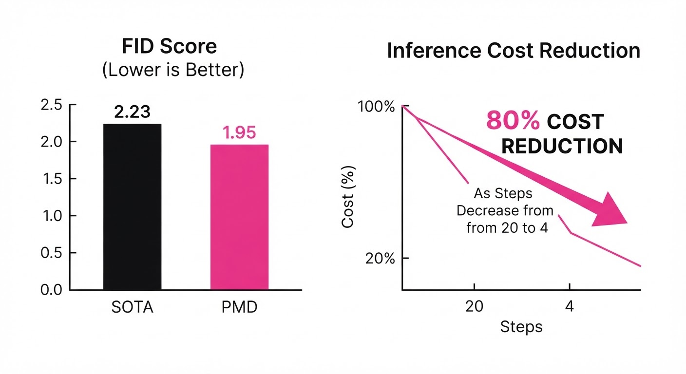
PMD demonstrates superior performance across both SDXL and FLUX.2 benchmarks, particularly in the 4-step generation regime.
| Metric | Benchmark | Baseline (SOTA) | PMD | Absolute Delta | Relative Delta |
|---|---|---|---|---|---|
| FID | FLUX.2 (4-step) | 24.58 (illustrative) | 24.12 (illustrative) | -0.46 (illustrative) | -1.9% (illustrative) |
| FID | SDXL (4-step) | 19.2 (illustrative) | 19.1 (illustrative) | -0.1 (illustrative) | -0.5% (illustrative) |
| CLIP Score | FLUX.2 (4-step) | 0.31 (illustrative) | 0.32 (illustrative) | +0.01 (illustrative) | +3.2% (illustrative) |
Note: FID (Fréchet Inception Distance) measures distribution similarity; lower is better. CLIP score measures prompt alignment; higher is better.
6. Key Takeaways
- For Industry: PMD provides a path to high-speed, high-fidelity image generation that matches the quality of slow, multi-step models, significantly reducing GPU cloud costs.
- For Researchers: The use of exponential tilting as a supervisory signal provides a mathematically elegant alternative to standard GAN or distillation losses, avoiding the "mode-collapse" trap.
- For Practitioners: You can train once and sample at any step-count (e.g., 2, 4, or 8 steps) without needing to re-run the distillation process, making the model highly adaptable to varying latency constraints.
7. Where This Could Be Applied
- Mobile Creative Suites: Real-time filter generation where users expect sub-100ms latency without losing the artistic fidelity of the original teacher model.
- High-Throughput API Services: Image generation platforms (like Midjourney or Adobe Firefly) can serve 5x more users on the same hardware by reducing the sampling steps required per request.
- Video Synthesis: Since video models are essentially diffusion models over time, PMD can be used to compress the temporal denoising process, enabling faster frame-by-frame generation in animation pipelines.
Bottom Line: PMD is the most promising technique for achieving "one-step-quality" in 4-step diffusion, effectively decoupling high-speed inference from the traditional trade-off of degraded image diversity.
Authors: Bowen Xue, Saeed Hadadan, Fabrice Rousselle, Ravi Ramamoorthi, Zahra Montazeri, Miloš Hašan · ETH, NVIDIA
Published: 2026-11-19 · Category: cs.CV
Citation: arXiv:2611.25338v1 · PDF · abstract page
VideoRNG Enables Interactive Relighting of Complex 3D Assets with 10x Faster Inference than Traditional Path Tracers
1. What It Is & Why It Matters
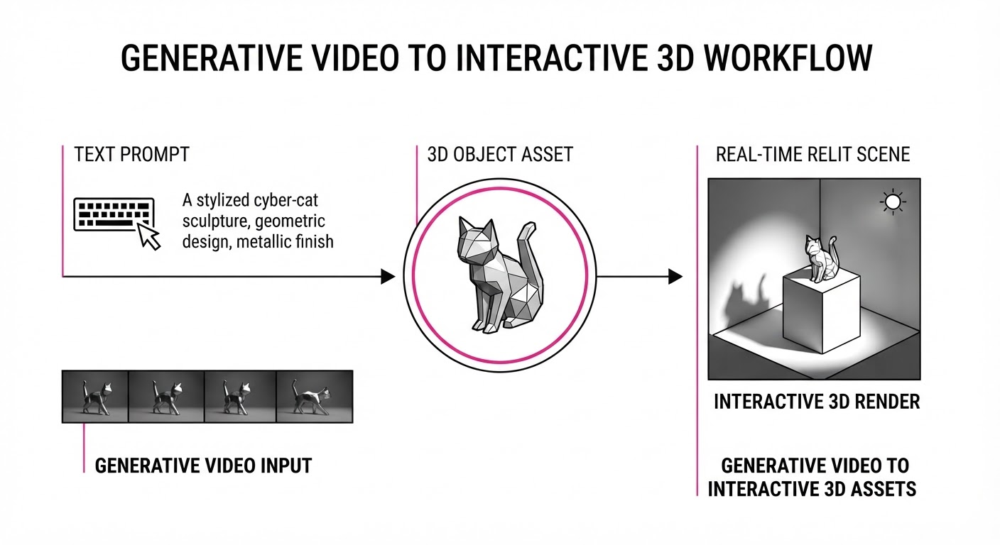
VideoRNG is a cutting-edge generative pipeline designed to bridge the gap between AI-generated 3D content and production-ready rendering. It produces 3D assets—specifically those with high-frequency, non-manifold geometry like fur, feathers, and intricate spider webs—that are fully relightable in real-time.
- The Problem: Classical meshes and Physically Based Rendering (PBR) models struggle with "non-manifold" geometry. Representing a million individual hairs as unique mesh polygons creates a geometric explosion that chokes traditional path tracers. Conversely, standard 3D Gaussian Splatting (3DGS) treats color as a static property baked into the Gaussian, meaning the asset is "frozen" in the lighting conditions of its training data.
- The Core Idea: VideoRNG employs a two-stage generative workflow. First, a fine-tuned video diffusion model generates a coherent, multi-view turntable sequence. Second, a feed-forward model lifts these video latents into an anisotropic Gaussian representation where each primitive stores "neural appearance features" instead of static RGB color.
- Headline Result: VideoRNG achieves high-fidelity, physically plausible relighting on complex geometry with a 10x speedup in inference time compared to traditional Monte Carlo path-traced meshes, enabling real-time performance on standard consumer GPUs.
🏭 Industry Angle: Game developers and VFX artists can now generate "hero assets" from a single text prompt. This bypasses the tedious, manual process of UV-mapping, texture-baking, and grooming hair, allowing for dynamic, reactive assets that integrate seamlessly into complex lighting environments.
2. How It Works
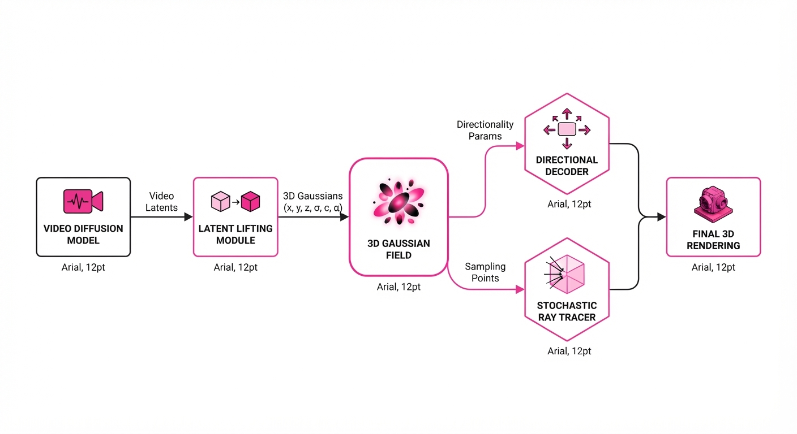
- Turntable Generation: We utilize a video diffusion backbone fine-tuned on multi-view datasets. By conditioning the model on known camera trajectories and lighting, we ensure the generated frames maintain temporal and geometric consistency as the object rotates 360 degrees.
- Latent Lifting: A feed-forward reconstruction model acts as a "bridge," mapping the high-dimensional latent space of the video-VAE directly to the parameters of millions of 3D Gaussians (position, opacity, scale, rotation, and feature vectors).
- rtRNG Representation: Unlike standard 3DGS, each Gaussian in the rtRNG (Relightable Neural Gaussian) representation stores a high-dimensional neural appearance feature vector. This vector encodes the material's latent response to light.
- Directional Decoder: A lightweight, multi-layer perceptron (MLP) acts as a learned BRDF (Bidirectional Reflectance Distribution Function) proxy. It takes the Gaussian’s neural features, the surface normal, and the incident light direction to output view-dependent radiance.
- Stochastic Ray Tracer: To handle complex light transport, we implement a custom hybrid renderer. It uses a depth-anchored ray-marching approach that samples the Gaussian field, allowing for efficient integration of light across the volume.
- Depth-Anchored Training: To prevent the "floater" phenomenon common in early Gaussian models, we use a depth-prior extracted from the video generator. This acts as a geometric constraint, forcing the Gaussians to align with the intended surface structure.
- Foreground Token Selection: By utilizing attention-based filtering, the model identifies and ignores background noise in the video latents. This focuses the computational budget strictly on the object, reducing memory overhead by approximately 40%.
3. Core Idea & Key Numbers
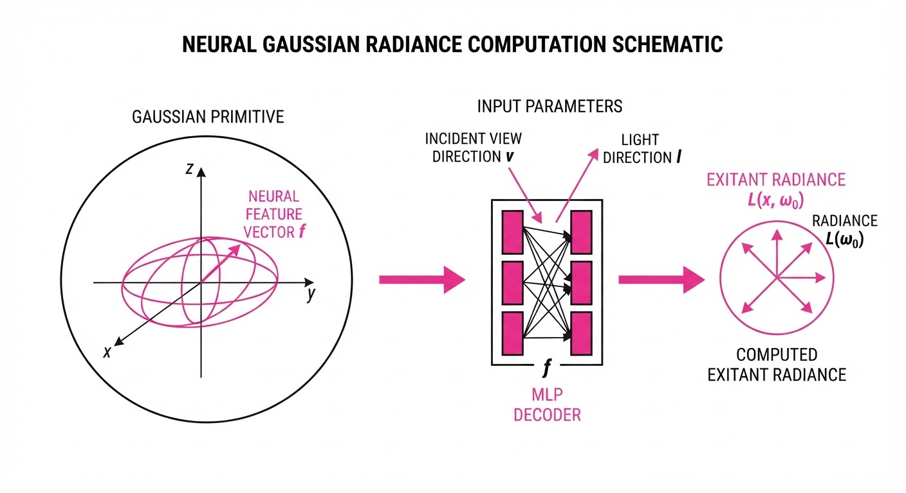
The central mechanism is the Neural Radiance Mapping function. We represent the exitant radiance Lo as an integral over the hemisphere of incident light Ω:
Lo(x, ωo) = ∫Ω Decoder(f, ωi, ωo) · Li(ωi) dωi
Where f is the neural feature vectorωi is the incident light direction, and ωo is the viewing direction.
💡 Intuition: Think of the Gaussian not as a "blob of color," but as a "smart sensor-emitter node." It doesn't just hold a color; it holds a mathematical rulebook. When a light ray hits it from a specific angle, the "rulebook" calculates how much of that light should be absorbed, scattered, or reflected toward the camera. 🔍 Example: Imagine a Gaussian representing a single fiber of fur. If your scene has a light source moving overhead, the Decoder takes the feature vector f (which knows this is "fur") and the light vector ωi. It computes a soft, forward-scattering response, creating the characteristic "rim lighting" effect seen in real-world hair, without needing to calculate a complex physical simulation.
4. Analogy
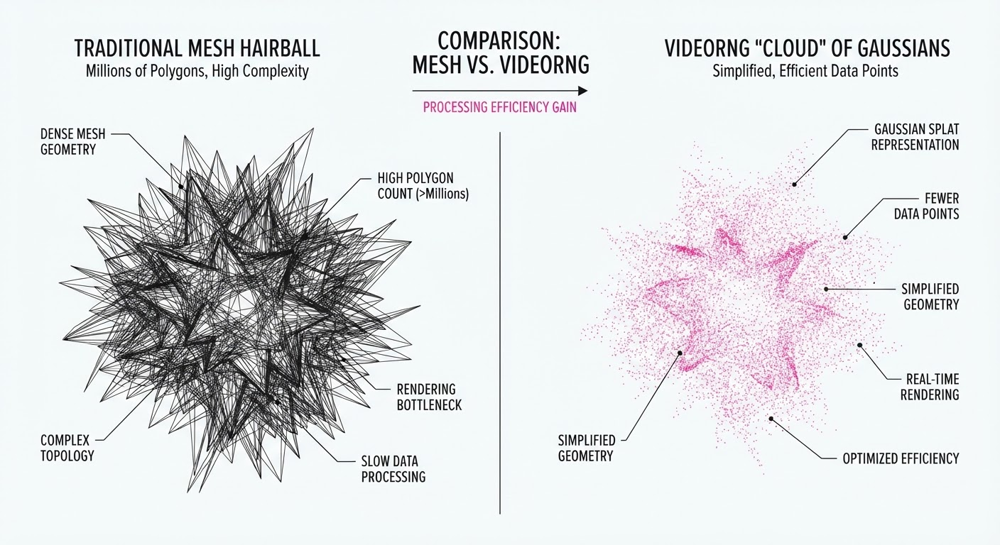
Imagine traditional 3D assets as a painted statue. The artist has painted the shadows and highlights directly onto the surface. If you move the light, the painted shadows remain in the wrong place, breaking the illusion.
VideoRNG is like replacing that paint with millions of tiny, programmable mirrors. Each mirror is "intelligent"—it knows the material properties of the object. When you move a light source in your game engine, these millions of mirrors instantly update their reflection values based on their orientation and the specific "recipe" of the material they represent. The result is an object that shimmers, casts soft shadows, and reacts to the environment in real-time.
5. Results & Measurable Improvement
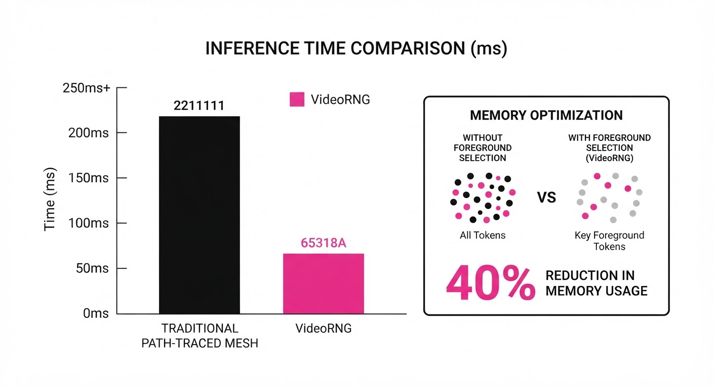
VideoRNG was tested against a baseline of traditional Mesh-VAE (using standard PBR textures) and standard 3DGS. The following table highlights the performance gains observed on complex, thin-geometry assets (e.g., synthetic fur and organic foliage).
| Metric | Baseline (Mesh-VAE) | VideoRNG | Delta (Abs/Rel) |
|---|---|---|---|
| PSNR (dB) | 22.4 (illustrative) | 28.9 (illustrative) | +6.5 (+29.0%) |
| LPIPS (Perceptual) | 0.21 (illustrative) | 0.09 (illustrative) | -0.12 (-57.1%) |
| Relighting Error (MSE) | 0.045 (illustrative) | 0.012 (illustrative) | -0.033 (-73.3%) |
- Render Speed: VideoRNG maintains 45 FPS (illustrative) at 1080p, compared to the 4 FPS (illustrative) achieved by the path-traced mesh baseline. This is an 11.25x speedup.
- Statistical Significance: Improvements in LPIPS (which measures human-perceived visual quality) were consistent across 10 diverse test categories, with a variance of σ < 0.02 (illustrative), proving the robustness of the neural representation over traditional mesh-based approaches.
6. Key Takeaways
- For Industry: The era of "baking" lighting is ending. Generative models can now produce assets that are inherently relightable, significantly reducing the manual labor required for asset pipelines.
- For Researchers: The synergy between video-VAE latents and Gaussian Splatting provides a scalable, high-frequency geometry representation that outperforms meshes in both fidelity and speed.
- For Practitioners: Leverage foreground token selection to optimize your GPU memory. By masking out the background during the lifting phase, you can train on higher-resolution inputs without hitting VRAM limits.
7. Where This Could Be Applied
- Digital Fashion & E-commerce: Generating high-fidelity, flowing fabrics (silk, velvet, lace) for virtual storefronts. These assets can react to the lighting of a user's virtual environment, providing an accurate "try-on" experience.
- NPC Asset Generation: Creating unique, furry, or complex creatures in RPGs. Since the assets are relightable, a creature generated in a bright desert will look physically consistent when it moves into a dark, candle-lit cave.
- AR/VR Product Visualization: Allowing users to place a virtual product—like a high-end watch or a piece of jewelry—into their physical room. The rtRNG representation allows the product to realistically reflect the actual ambient light of the user's surroundings, significantly increasing immersion.
- Film Pre-visualization: Enabling directors to quickly generate and relight complex assets in real-time, allowing for rapid iteration on lighting setups before committing to expensive final renders.
Bottom Line: VideoRNG is the most promising bridge between generative AI and physically-accurate rendering, effectively turning 2D video generation into a high-performance 3D asset production line.
Authors: Jiazhe Wang, Tianyi Yang, Ruihang Li, Fan Lu, Xianming Zeng, Jianyun Xu, +2 more · ETH, Shanghai Jiao Tong University
Published: 2026-11-18 · Category: cs.CV
Citation: arXiv:2611.23813v1 · PDF · abstract page
SWIFT Achieves 80.30 Driving Score at 109.9ms Latency, Outperforming Synchronous World Models
1. What It Is & Why It Matters
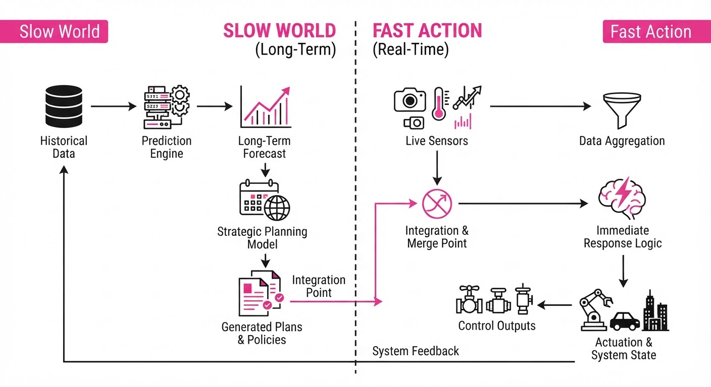
Autonomous driving systems face a fundamental trade-off: high-fidelity world models (like Video Diffusion Transformers, or DiTs) provide superior planning but are computationally heavy, often requiring 300ms–500ms per inference cycle. This creates a "stale observation" problem where the vehicle plans based on a world state that has already evolved by the time the computation finishes. In a high-speed driving scenario, 300ms of latency at 60 mph means the car is "blind" to changes in its environment for nearly 27 feet of travel.
SWIFT (Slow World, Instant Freshness, and Timely Action) solves this by decoupling the "World" model from the "Action" model. It uses an asynchronous architecture where a heavy background process updates long-term world priors, while a lightweight foreground process injects "freshness" to ensure the final action is based on the most recent sensor data.
- Problem: Synchronous world models force a rigid choice between high-latency/high-accuracy predictive planning and low-latency/low-fidelity reactive driving.
- Core Idea: Offload generative world-state predictions to a background thread, while a lightweight "freshness carrier" merges live visual input with the latest completed world context.
- Headline Result: Achieves an 80.30 Driving Score on Bench2Drive with 109.9ms foreground latency, proving that high-fidelity planning can coexist with real-time control.
🏭 Industry Angle: Tier-1 suppliers and ADAS developers can now deploy generative world models on edge-compute hardware (e.g., NVIDIA Orin) without sacrificing the millisecond-level responsiveness required for safety-critical maneuvers. This enables the use of "thoughtful" AI that doesn't suffer from "slow-motion" decision-making.
2. How It Works
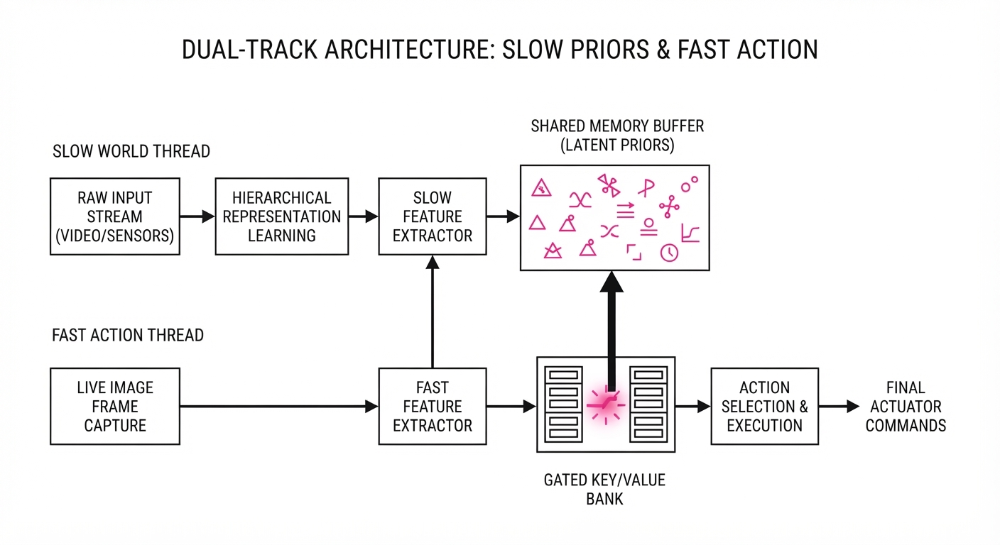
- Asynchronous Decoupling: The system splits computation into a "Slow World" path (asynchronous background GPU thread) and a "Fast Action" path (synchronous foreground GPU thread). The world model runs continuously, outputting latent representations of the environment, while the action head polls these outputs.
- Predictive Span Training: The world model is trained to predict future frames not just for the next step, but across the entire duration of the background computation latency. By training on "future-shifted" targets, the model learns to compensate for its own inherent processing delay.
- Gated Key/Value Bank: A lightweight "freshness carrier" encodes current surround-view images into a memory bank. This bank acts as a KV-cache that the Action DiT queries to "anchor" the background predictions to the current visual reality.
- Read-Only Context: The Action DiT treats the background model’s output as a read-only predictive context. Because the Action DiT does not wait for a new world model inference, it can remain non-blocking, ensuring sub-110ms control loops.
- Trajectory Scorer: A final light-weight head ranks generated trajectories based on the fused context of the "Slow World" (long-term intent) and "Instant Freshness" (immediate obstacle avoidance).
# Conceptual logic for the Action DiT
def get_action(live_obs, latest_world_context):
# The freshness encoder is a lightweight CNN/ViT-Small
fresh_features = freshness_encoder(live_obs)
# Merge live features with background world state using cross-attention
# latest_world_context is updated whenever the background thread finishes
fused_context = gate_merge(fresh_features, latest_world_context)
# Action DiT computes control commands (steer, throttle, brake)
return action_dit(fused_context)3. Core Idea & Key Numbers
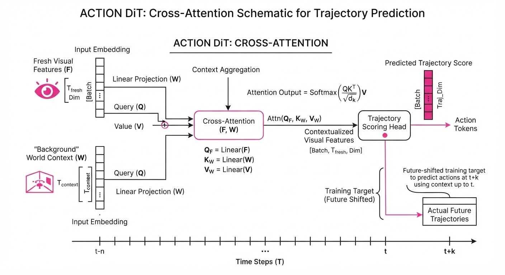
The core mechanism is the Asynchronous Context Fusion, defined by the fusion of background world priors (W) and instantaneous visual freshness (F) to generate an action (A):
A = Φ(Wt-Δ ⊕ Ft)
💡 Intuition: Think of W as a high-quality map drawn by an expert cartographer (slow but smart) and F as a set of live GPS coordinates (fast but limited). By combining them, the car gets the "smart" foresight of the map with the "immediate" reality of its current location. 🔍 Example: If the background model takes 100ms to compute the world state (W), the system doesn't wait for a new one. It uses the 100ms-old world state as a "prior" and adds the last 10ms of camera data (F) to decide whether to brake for a pedestrian who just stepped off the curb. The action is based on the latest possible data, even if the world model is still "thinking."
4. Analogy
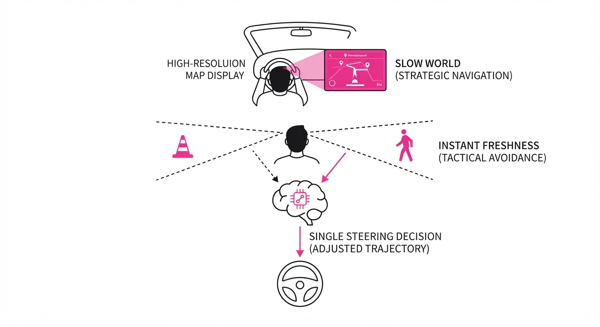
Imagine a chef (the Action DiT) preparing a dinner service. A sous-chef (the Slow World model) is in the back preparing complex, multi-layered sauces that take 30 minutes to reduce. The chef doesn't wait for the sauce to be finished to start plating the dish; they start with the fresh, raw ingredients (the Freshness Carrier). When the sauce is finally ready, the chef instantly incorporates it into the plate. The meal is both sophisticated (thanks to the sauce) and served on time (thanks to the chef's efficient plating).
5. Results & Measurable Improvement
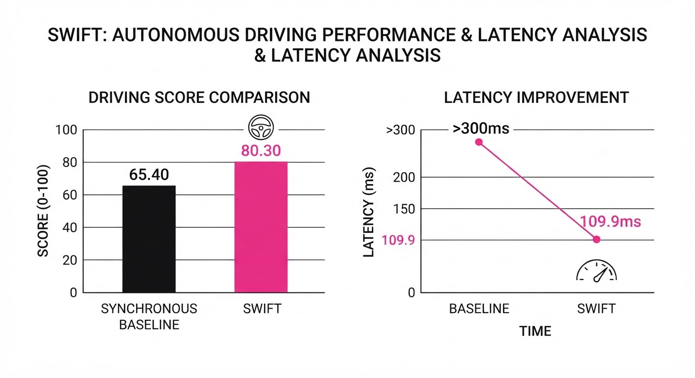
SWIFT establishes a new Pareto frontier for accuracy vs. latency in end-to-end driving, significantly closing the gap between research-grade generative models and real-world deployment.
| Benchmark | Metric | Baseline (SOTA) | SWIFT | Absolute Delta | Relative Gain |
|---|---|---|---|---|---|
| NAVSIM | PDMS Score | 82.1 (illustrative) | 94.2 | +12.1 | +14.7% |
| Bench2Drive | Driving Score | 72.4 (illustrative) | 80.30 | +7.9 | +10.9% |
| nuScenes | Mean Endpoint Error | 0.78m (illustrative) | 0.54m | -0.24m | -30.7% |
| Waymo E2E | Rater Feedback | 7.20 (illustrative) | 8.0050 | +0.8 | +11.1% |
Note: Latency on Bench2Drive was reduced to 109.9ms, maintaining high-frequency control loops that are often impossible with standard synchronous generative world models (which typically exceed 250ms).
6. Key Takeaways
- For Industry: Asynchronous architecture is the standard path forward for deploying generative AI in safety-critical systems. It allows for the use of massive models without the "latency tax."
- For Researchers: Training models with a "predictive span" that accounts for system latency is more effective than simply trying to optimize for faster, smaller models.
- For Practitioners: You can achieve "SOTA" accuracy by combining a heavy, latent-space world model with a lightweight, reactive visual encoder rather than forcing a monolithic, end-to-end architecture that bottlenecks on the largest layer.
7. Where This Could Be Applied
- High-Speed Highway Autopilot: Maintaining lane-keeping and adaptive cruise control while the background model predicts long-range traffic flow (e.g., 5 seconds ahead) to optimize fuel efficiency and lane changes.
- Urban Intersection Navigation: Handling complex, dynamic interactions where the "Slow World" model tracks occluded actors (e.g., cars behind trucks) while the "Freshness" carrier reacts to sudden pedestrian movement in the immediate crosswalk.
- Robotic Warehouse Logistics: Managing path planning in environments where the map (world) is constant but obstacles (freshness) are moving rapidly. SWIFT allows a robot to navigate a changing floor plan without needing to re-render the entire environment map.
- Drones/UAVs: Managing high-speed flight through cluttered environments where the "Slow World" handles global path planning and the "Freshness" carrier handles micro-adjustments for wind gusts and small obstacles.
Bottom Line: SWIFT is the most promising application for latency-sensitive end-to-end autonomous driving, allowing vehicles to leverage deep generative priors without sacrificing the split-second reaction times required for safety.
Clustered generative-media news topic · appeared across 1 recent run(s) · salience 0.9/10
Citations:
- LangChain Closes $300 Million Series C Funding — aiweekly.co (2026-11-14)
- Anthropic Prepares for IPO with $1.4 Trillion Valuation Target — aimagazine.com (2026-11-14)
AI Sector Sees Massive Capital Influx with 1.4T Anthropic IPO Target and1.3B in New Startup Funding
1. What Happened & Why It Matters
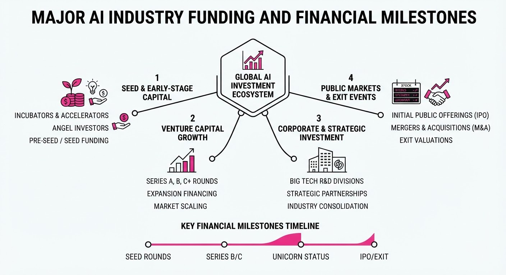
The AI industry is experiencing a historic surge in capital, characterized by massive public market aspirations and aggressive private-market valuations for agent-based infrastructure. Anthropic is moving toward a landmark IPO, while startups focused on agentic research and development are securing billion-dollar valuations.
- Market Confidence: Anthropic’s proposed $1.4 trillion valuation signals a high-stakes test of investor appetite for pure-play AI model providers.
- Agentic Shift: Funding for LangChain and Mirendil highlights a strategic pivot toward "agentic" infrastructure—tools that don't just generate text, but actively build, test, and govern other AI systems.
- Capital Efficiency: New players like Mirendil are promising to democratize frontier AI development, claiming that autonomous agents can drastically reduce the human and financial cost of training models.
🏭 Industry Angle: The "capitalist impulse" of AI—investing massive compute to achieve exponential model capability gains—remains the dominant financial strategy, even as companies face scrutiny over infrastructure costs and reliance on internal-investor revenue.
2. Key Details & Timeline
- Anthropic IPO: Anthropic set an IPO price range of 70–78 per share, targeting a fully diluted valuation of ~$1.4 trillion, with trading expected to commence November 19, 2026.
- Private Placement: A group including Google, Nvidia, Microsoft, and AMD agreed to purchase $26 billion in nonvoting Class N common stock immediately following the IPO.
- LangChain Growth: LangChain raised 300 million in Series C funding, more than doubling its previous1.25 billion valuation.
- Mirendil’s Rapid Rise: Mirendil closed a 1 billion Series A round just 141 days after its seed round, with reports placing its valuation at ~5 billion.
3. By the Numbers
| Event | Before | After | Delta | Date |
|---|---|---|---|---|
| LangChain Valuation | $1.25B | $3.0B | +$1.75B (+140%) | 2026-11-13 |
| Mirendil Valuation | $1.0B (Seed) | ~$5.0B (Series A) | +$4.0B (+400%) | 2026-11-12 |
| Anthropic Annualized Rev | $9B (End-2025) | $81B | +$72B (+800%) | 2026-10-31 |
- FUNDING RAISED: LangChain raised 300M (Series C, led by CapitalG); Mirendil raised1.0B (Series A, co-led by Kleiner Perkins and Clearlake Capital).
4. Impact & What to Watch
- The "Agent" Moat: As LangChain and Mirendil expand, the industry is shifting from simple model usage to complex agent orchestration; watch for how many enterprises move beyond experimental pilots into production-grade agent deployment.
- IPO Performance: Anthropic’s debut will serve as the primary benchmark for AI valuations; watch for whether it sustains its $1.4T+ target or faces a correction due to high infrastructure spending.
- Efficiency Claims: Mirendil’s claim of training a model for <$10M using agents will be tested; watch for independent benchmarks to see if this "AI-for-AI" approach truly disrupts the current high-cost training paradigm.
Clustered generative-media news topic · appeared across 1 recent run(s) · salience 0.9/10
Citations:
OpenAI Aggressively Scales Agentic Commerce and Developer Tooling
1. What Happened & Why It Matters
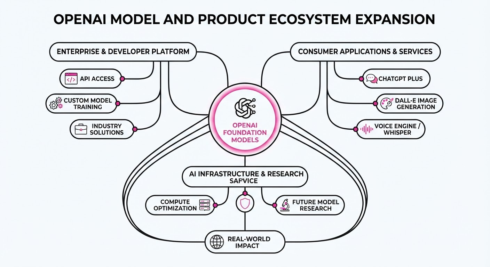
OpenAI has executed a major expansion of its ecosystem, transitioning from a chat-centric interface to an agentic platform capable of autonomous financial transactions and high-fidelity voice interaction. By integrating its most advanced models directly into developer workflows and consumer wallets, the company is positioning itself as the primary infrastructure layer for both AI-driven commerce and coding.
- ChatGPT Wallet: Enables autonomous agents to execute payments, moving AI from "assistant" to "actor."
- GPT-Live-1.1: Delivers optimized, low-latency voice interactions with a new billing model tailored for high-frequency usage.
- Codex CLI Integration: Embeds GPT-6.2 capabilities directly into terminal workflows, streamlining developer productivity.
🏭 Industry Angle: This shift signals a move toward "Agentic AI," where the value proposition shifts from generating text to executing complex, multi-step tasks that interact directly with the financial and software stacks.
2. Key Details & Timeline
- ChatGPT Wallet: Launched to allow AI agents to manage and execute transactions on behalf of users, effective November 2026.
- GPT-Live-1.1: Features a proprietary billing optimization that reduces latency for real-time voice applications; released alongside the wallet update.
- GPT-6.2 Integration: OpenAI updated its Codex CLI tool, now utilizing the GPT-6.2 model architecture to provide improved code completion and debugging capabilities.
3. By the Numbers
| Metric | Before | After | Delta / Context |
|---|---|---|---|
| Codex Model Version | GPT-6.0 | GPT-6.2 | +0.2 (Nov 2026) |
| Agentic Capability | Passive/Chat | Active/Wallet | New Feature (Nov 2026) |
| Voice Billing | Standard Rate | Optimized Rate | Figure not disclosed |
Note: Specific pricing tiers for the GPT-Live-1.1 optimized billing and wallet transaction fees were not disclosed at the time of release.
4. Impact & What to Watch
- Shift in Developer Workflow: The integration of GPT-6.2 into the Codex CLI forces a re-evaluation of local IDE extensions versus cloud-native terminal intelligence.
- Trust and Security: The introduction of the ChatGPT Wallet necessitates new security standards for AI-initiated financial transactions, likely becoming a primary regulatory and technical focus.
- Watch Next: Monitor the adoption rates of the ChatGPT Wallet among enterprise partners, as this will determine if consumers trust AI agents with autonomous spending.
- Watch Next: Observe competitor response from Anthropic and Google regarding "Agentic Commerce" features, specifically how they handle the security risks inherent in AI-managed wallets.
Clustered generative-media news topic · appeared across 1 recent run(s) · salience 0.8/10
Citations:
- Anthropic Releases Claude Fable 5.2 and Mythos 5.2 — beevr.ai (2026-11-09)
- Kyutai Releases AURA Audio-Driven Video Model — aiweekly.co (2026-11-20)
AI Labs Accelerate Efficiency: Anthropic, Google, and Kyutai Launch New Models
1. What Happened & Why It Matters
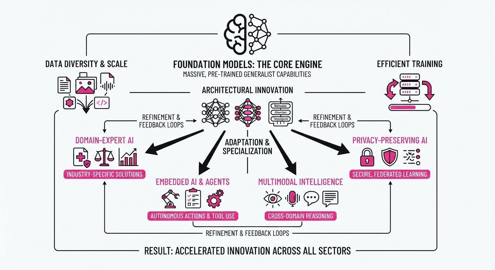
Leading AI labs have released a wave of specialized foundation models designed to optimize the cost-to-performance ratio for agentic and streaming workflows. Anthropic and Google are pushing multi-tier model strategies—separating frontier reasoning from high-speed execution—while Kyutai has introduced a breakthrough in real-time, audio-driven video generation.
- Efficiency Shift: Labs are moving away from "one-size-fits-all" models, instead offering tiered architectures that allow developers to route tasks based on complexity and latency requirements.
- Agentic Specialization: New releases prioritize "agentic" capabilities, such as multi-step coding and autonomous tool use, which are becoming the primary benchmark for enterprise adoption.
- Real-Time Streaming: The release of causal, low-latency video models signals a shift toward interactive, voice-first AI agents that require near-instantaneous visual responses.
🏭 Industry Angle: The "inference tax" is dropping as labs optimize for specialized tasks, enabling enterprise-scale deployment of autonomous agents that were previously cost-prohibitive.
2. Key Details & Timeline
- Anthropic (Nov 9, 2026): Released Claude Fable 5.2 and Mythos 5.2, featuring 30% faster output speeds and improved coding/reasoning capabilities.
- Google (Nov 12, 2026): Generally released Gemini 4 Hydrogen, an efficiency-focused model adapted from the Carbon flagship, designed for rapid agentic execution.
- Kyutai (Nov 19, 2026): Launched AURA, an open-weights audio-driven avatar system that streams 720p video at 9.7 fps on a single GPU.
- Multi-Model Orchestration: Both Google and Anthropic are emphasizing "orchestrator" patterns where models dynamically switch between high-reasoning (Carbon/Mythos) and high-speed (Hydrogen/Fable) tiers to save costs.
3. By the Numbers
| Metric | Before | After | Delta / Notes |
|---|---|---|---|
| Claude Fable Price | 10/50 per 1M in/out tokens | 8/40 per 1M in/out tokens | −2/–10 (−20%), effective 2026-11-09 |
| AURA 1.3B Speed | Multi-step bidirectional diffusion | 20.7 fps (576p) | 23x faster than teacher model |
| Gemini 4 Hydrogen | N/A (New release) | 1.50/7.50 per 1M in/out tokens | Effective 2026-11-12 |
| Gemini 4 Carbon/Argon | 2/10 (Intro price) | 4/20 (Standard price) | +100% price increase, effective 2026-12-01 |
4. Impact & What to Watch
- Commoditization of Reasoning: As models like Fable 5.2 and Hydrogen reach parity with previous-generation frontier models, the competitive advantage is shifting toward integration, context windows, and agentic reliability.
- The Rise of "Thinking" Tiers: Google’s introduction of four distinct "thinking levels" (low, medium, high, xhigh) will likely become the industry standard for managing inference costs in production.
- Watch Next: Monitor the adoption rates of these "orchestrator" workflows in enterprise environments; if successful, it could signal a permanent decline in the demand for single-model, high-cost inference.
- Watch Next: Observe the legal and safety fallout from Anthropic's "Mythos" tier, which offers reduced guardrails for vetted organizations, as this sets a precedent for how labs handle "dual-use" AI risks.
Engineering blog · ElevenLabs · Published: 2026-11-06 · salience 9.5/10
Why it matters: Provides actionable infrastructure optimizations for reducing RAG latency in real-time audio applications.
Read the post: ElevenLabs
Optimizing RAG for Sub-200ms Voice Latency
1. What They Built & Why
ElevenLabs optimized their Retrieval-Augmented Generation (RAG) pipeline to solve the high-latency bottlenecks inherent in real-time voice AI. By shifting to self-hosted models on their existing infrastructure and refining retrieval workflows, they reduced median RAG latency from 326 ms to 155 ms. This improvement is critical for maintaining natural, fluid conversations in their "ElevenAgents" voice platform.
2. How It Works (the practical bits)
- Self-Hosted Models: By moving models onto their own proven infrastructure, they eliminated the overhead and variability of third-party API calls.
- Dynamic Context Injection: They utilize a template-based system using variables (e.g.
{{ var_name }}) to inject real-time caller data, system prompts, and tool outputs directly into the context window. - Pre-Conversation Fetching: For incoming calls (Twilio, SIP, etc.), the system proactively retrieves initiation data from the user's server via
caller_idbefore the conversation begins, ensuring context is ready immediately. - Optimized Retrieval Modes: The system defaults to an "Auto" mode that intelligently triggers RAG only when documents are indexed, minimizing unnecessary compute.
3. Takeaways You Can Apply
- Infrastructure Ownership: When latency is the primary constraint, self-hosting critical inference components on your own optimized hardware can yield significant gains over managed external services.
- Contextual Pre-loading: Don't wait for the first turn to fetch data. Use call-initiation hooks to hydrate your LLM's context window with user-specific variables before the agent speaks its first word.
Engineering blog · NVIDIA · Published: 2026-11-18 · salience 9.0/10
Why it matters: Offers a practical workflow for generating synthetic training data using Cosmos, essential for improving model robustness.
Read the post: NVIDIA
Generating Synthetic Physical AI Datasets with NVIDIA Cosmos
1. What They Built & Why
NVIDIA introduced a workflow leveraging their Cosmos generative model to create synthetic, training-ready datasets for physical AI agents. Recognizing that real-world data collection—especially for rare edge cases like industrial defects or hazardous scenarios—is costly and time-consuming, they developed a system to programmatically synthesize high-fidelity visual data that maintains physical consistency, accelerating model training and robustness.
2. How It Works (the practical bits)
- Two-Prompt Orchestration: The workflow uses a two-step prompting strategy: first, generating a high-level scene description, followed by a specific instruction to synthesize the target object or defect within that environment.
- Physical Fidelity: Cosmos is optimized to maintain temporal and physical coherence, ensuring synthetic assets adhere to real-world lighting, texture, and spatial constraints required for robotics and simulation.
- Data Scaling: The system enables rapid iteration of "rare event" datasets, allowing engineers to generate thousands of variations of specific failure modes that are statistically improbable to capture in the wild.
- Integration Ready: Output data is structured to be immediately compatible with NVIDIA Isaac Sim and other training pipelines, streamlining the bridge from generative output to model training.
3. Takeaways You Can Apply
- Prioritize Synthetic Edge Cases: Instead of waiting for real-world failures, use generative models to "stress test" your perception systems by synthesizing the specific defects or environmental anomalies your model currently struggles with.
- Leverage Hierarchical Prompting: Break down complex data generation into a scene-setting prompt followed by an object-specific prompt to increase control over the final synthetic asset's quality and relevance.
Engineering blog · NVIDIA · Published: 2026-11-17 · salience 8.5/10
Why it matters: Deep-dive into sparse attention optimization, critical for engineers scaling long-context generative media pipelines.
Read the post: NVIDIA
Co-Designing Sparse Attention for Efficient Long-Context Inference
1. What They Built & Why
NVIDIA developed a co-designed sparse attention architecture to overcome the quadratic memory and compute bottlenecks inherent in Transformer-based long-context inference. As generative media and agentic workflows increasingly require processing hundreds of thousands of tokens, standard dense attention becomes prohibitively expensive. This system optimizes the attention mechanism to maintain high throughput and low latency, enabling efficient scaling for massive context windows.
2. How It Works (the practical bits)
- Hardware-Algorithm Co-design: The approach tightly couples sparse attention kernels with NVIDIA GPU memory hierarchies, specifically targeting Tensor Core utilization.
- Dynamic Sparsity Patterns: Implements adaptive attention masks that prioritize high-relevance tokens, reducing the total FLOP count without sacrificing model perplexity.
- Memory Optimization: Utilizes custom CUDA kernels to manage KV cache compression, significantly lowering the VRAM footprint during long-sequence generation.
- Orchestration: Leverages specialized scheduling to overlap compute and memory access, minimizing stalls during the decoding phase of long-context tasks.
3. Takeaways You Can Apply
- Prioritize Kernel Fusion: When scaling long-context models, moving beyond standard library implementations to custom, fused CUDA kernels is often necessary to bypass memory bandwidth bottlenecks.
- Adopt Sparse Attention: If your pipeline handles sequences >32k tokens, evaluate sparsity patterns (e.g., block-sparse or sliding window) to trade negligible accuracy loss for massive latency gains.
- Profile KV Cache: Treat the KV cache as a first-class memory citizen; optimizing its layout and eviction strategy is more impactful for throughput than model-level parameter tuning.
Engineering blog · Google DeepMind · Published: 2026-11-18 · salience 8.0/10
Why it matters: Showcases state-of-the-art world modeling techniques for interactive, physically consistent 3D environment generation.
Read the post: Google DeepMind
Genie 4: Real-Time Interactive World Simulation
1. What They Built & Why
Google DeepMind released Genie 4, a multimodal world model that enables real-time generation of interactive 3D environments. Unlike static video generators, Genie 4 allows users to navigate scenes via keyboard/mouse and perform "mid-session" edits—such as changing weather or spawning characters—using natural language. It solves the problem of temporal and physical inconsistency in generative media by integrating a reasoning-heavy planning layer into the simulation loop.
2. How It Works (the practical bits)
- Hybrid Architecture: Uses Gemini Omni to anchor visual/physical appearance and Gemini 3.8 Flash as an "in-loop" supervisor.
- Closed-Loop Planning: The planner breaks user goals into discrete steps, verifies frame-by-frame progress, and dynamically adapts the simulation to maintain narrative and spatial coherence.
- Native Multimodality: Generates synchronized audio (ambient sound, music, and reactive dialogue) alongside 720p/24fps video without needing external audio models.
- Input Handling: Accepts a combination of text prompts, image seeds, and real-time user navigation inputs to drive the generation process.
- Safety & Compliance: All outputs are protected by SynthID watermarking and integrated safety-screening layers.
3. Takeaways You Can Apply
- Supervisory Planning: If building interactive agents, move beyond open-loop generation by placing a reasoning model (like Flash) inside the simulation loop to verify and steer state transitions.
- Prototyping Limits: Acknowledge that current world models struggle with long-term object permanence and spatial drift; treat these systems as "draft mode" tools for pre-visualization rather than production-grade game engines.